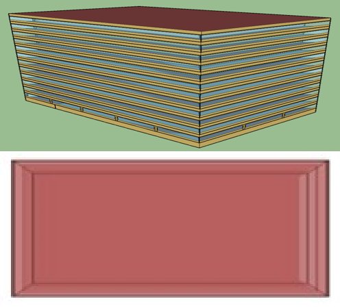

This is a large office EnergyPlus model. It is based on DOE Commercial Reference Large Office Building model, post-1980 construction, and ASHRAE Standards 90.1-1989 and 62-1999 [1]. The original model has 12 floors (10 identical middle floors) with a basement. Due to the current limitation in Spawn of rejecting the floor multiplier, this emulator only contains three floors (i.e., top, middle, bottom). The ground floor is assumed to be adiabatic with the basement. The HVAC system are ideal load systems, which calculates the sensible/latent cooling/heating load.

Number of Stories = 3; Shape = rectangle, Aspect ratio = 1.5.
| Opaque constructions | Mass walls; built-up flat roof (insulation above deck); slab-on-grade floor. |
| Windows | Window-to-wall ratio = 38.0%, equal distribution of windows. |
| Infiltration | No infiltration. |
See BLDG_OCC_SCH in attached idf.
See BLDG_LIGHT_SCH, BLDG_EQUIP_SCH, BLDG_ELEVATORS in attached idf.
The weather data is from TMY3 for Chicago O'Hare International Airport.
The HVAC system are ideal load systems, which can be thought of as ideal units that add or removes heat and moisture at 100% efficiency in order to produce a supply air stream at the specified conditions. The energy required to condition the supply air is calculated. The ideal loads systems are controlled to meet the sensible cooling load. The latent cooling rate is computed using a constant sensible heat ratio (SHR) of 0.7. There is no limit to the cooling/heating capacity.
EPlus96_oveTZonBotCor_u [K] [min=None, max=None]: Bottom floor air temperature of core zone
EPlus96_oveTZonBotEas_u [K] [min=None, max=None]: Bottom floor air temperature of east zone
EPlus96_oveTZonBotNor_u [K] [min=None, max=None]: Bottom floor air temperature of north zone
EPlus96_oveTZonBotSou_u [K] [min=None, max=None]: Bottom floor air temperature of south zone
EPlus96_oveTZonBotWes_u [K] [min=None, max=None]: Bottom floor air temperature of west zone
EPlus96_oveTZonMidCor_u [K] [min=None, max=None]: Middle floor air temperature of core zone
EPlus96_oveTZonMidEas_u [K] [min=None, max=None]: Middle floor air temperature of east zone
EPlus96_oveTZonMidNor_u [K] [min=None, max=None]: Middle floor air temperature of north zone
EPlus96_oveTZonMidSou_u [K] [min=None, max=None]: Middle floor air temperature of south zone
EPlus96_oveTZonMidWes_u [K] [min=None, max=None]: Middle floor air temperature of west zone
EPlus96_oveTZonTopCor_u [K] [min=None, max=None]: Top floor air temperature of core zone
EPlus96_oveTZonTopEas_u [K] [min=None, max=None]: Top floor air temperature of east zone
EPlus96_oveTZonTopNor_u [K] [min=None, max=None]: Top floor air temperature of north zone
EPlus96_oveTZonTopSou_u [K] [min=None, max=None]: Top floor air temperature of south zone
EPlus96_oveTZonTopWes_u [K] [min=None, max=None]: Top floor air temperature of west zone
EPlus96_reaHeaLoaBotCor_y [W] [min=None, max=None]: Heating load in core zone on bot floor
EPlus96_reaHeaLoaBotEas_y [W] [min=None, max=None]: Heating load in east zone on bot floor
EPlus96_reaHeaLoaBotNor_y [W] [min=None, max=None]: Heating load in north zone on bot floor
EPlus96_reaHeaLoaBotSou_y [W] [min=None, max=None]: Heating load in south zone on bot floor
EPlus96_reaHeaLoaBotWes_y [W] [min=None, max=None]: Heating load in west zone on bot floor
EPlus96_reaHeaLoaMidCor_y [W] [min=None, max=None]: Heating load in core zone on mid floor
EPlus96_reaHeaLoaMidEas_y [W] [min=None, max=None]: Heating load in east zone on mid floor
EPlus96_reaHeaLoaMidNor_y [W] [min=None, max=None]: Heating load in north zone on mid floor
EPlus96_reaHeaLoaMidSou_y [W] [min=None, max=None]: Heating load in south zone on mid floor
EPlus96_reaHeaLoaMidWes_y [W] [min=None, max=None]: Heating load in west zone on mid floor
EPlus96_reaHeaLoaTopCor_y [W] [min=None, max=None]: Heating load in core zone on top floor
EPlus96_reaHeaLoaTopEas_y [W] [min=None, max=None]: Heating load in east zone on top floor
EPlus96_reaHeaLoaTopNor_y [W] [min=None, max=None]: Heating load in north zone on top floor
EPlus96_reaHeaLoaTopSou_y [W] [min=None, max=None]: Heating load in south zone on top floor
EPlus96_reaHeaLoaTopWes_y [W] [min=None, max=None]: Heating load in west zone on top floor
EPlus96_reaLatCooLoaBotCor_y [W] [min=None, max=None]: Latent cooling load in core zone on bot floor
EPlus96_reaLatCooLoaBotEas_y [W] [min=None, max=None]: Latent cooling load in east zone on bot floor
EPlus96_reaLatCooLoaBotNor_y [W] [min=None, max=None]: Latent cooling load in north zone on bot floor
EPlus96_reaLatCooLoaBotSou_y [W] [min=None, max=None]: Latent cooling load in south zone on bot floor
EPlus96_reaLatCooLoaBotWes_y [W] [min=None, max=None]: Latent cooling load in west zone on bot floor
EPlus96_reaLatCooLoaMidCor_y [W] [min=None, max=None]: Latent cooling load in core zone on mid floor
EPlus96_reaLatCooLoaMidEas_y [W] [min=None, max=None]: Latent cooling load in east zone on mid floor
EPlus96_reaLatCooLoaMidNor_y [W] [min=None, max=None]: Latent cooling load in north zone on mid floor
EPlus96_reaLatCooLoaMidSou_y [W] [min=None, max=None]: Latent cooling load in south zone on mid floor
EPlus96_reaLatCooLoaMidWes_y [W] [min=None, max=None]: Latent cooling load in west zone on mid floor
EPlus96_reaLatCooLoaTopCor_y [W] [min=None, max=None]: Latent cooling load in core zone on top floor
EPlus96_reaLatCooLoaTopEas_y [W] [min=None, max=None]: Latent cooling load in east zone on top floor
EPlus96_reaLatCooLoaTopNor_y [W] [min=None, max=None]: Latent cooling load in north zone on top floor
EPlus96_reaLatCooLoaTopSou_y [W] [min=None, max=None]: Latent cooling load in south zone on top floor
EPlus96_reaLatCooLoaTopWes_y [W] [min=None, max=None]: Latent cooling load in west zone on top floor
EPlus96_reaOccSch_y [1] [min=None, max=None]: Occupancy schedule
EPlus96_reaPeoCouBotCor_y [1] [min=None, max=None]: Number of people in core zone on bot floor
EPlus96_reaPeoCouBotEas_y [1] [min=None, max=None]: Number of people in east zone on bot floor
EPlus96_reaPeoCouBotNor_y [1] [min=None, max=None]: Number of people in north zone on bot floor
EPlus96_reaPeoCouBotSou_y [1] [min=None, max=None]: Number of people in south zone on bot floor
EPlus96_reaPeoCouBotWes_y [1] [min=None, max=None]: Number of people in west zone on bot floor
EPlus96_reaPeoCouMidCor_y [1] [min=None, max=None]: Number of people in core zone on mid floor
EPlus96_reaPeoCouMidEas_y [1] [min=None, max=None]: Number of people in east zone on mid floor
EPlus96_reaPeoCouMidNor_y [1] [min=None, max=None]: Number of people in north zone on mid floor
EPlus96_reaPeoCouMidSou_y [1] [min=None, max=None]: Number of people in south zone on mid floor
EPlus96_reaPeoCouMidWes_y [1] [min=None, max=None]: Number of people in west zone on mid floor
EPlus96_reaPeoCouTopCor_y [1] [min=None, max=None]: Number of people in core zone on top floor
EPlus96_reaPeoCouTopEas_y [1] [min=None, max=None]: Number of people in east zone on top floor
EPlus96_reaPeoCouTopNor_y [1] [min=None, max=None]: Number of people in north zone on top floor
EPlus96_reaPeoCouTopSou_y [1] [min=None, max=None]: Number of people in south zone on top floor
EPlus96_reaPeoCouTopWes_y [1] [min=None, max=None]: Number of people in west zone on top floor
EPlus96_reaRelHum_y [1] [min=None, max=None]: Relative humidity
EPlus96_reaSenCooLoaBotCor_y [W] [min=None, max=None]: Sensible cooling load in core zone on bot floor
EPlus96_reaSenCooLoaBotEas_y [W] [min=None, max=None]: Sensible cooling load in east zone on bot floor
EPlus96_reaSenCooLoaBotNor_y [W] [min=None, max=None]: Sensible cooling load in north zone on bot floor
EPlus96_reaSenCooLoaBotSou_y [W] [min=None, max=None]: Sensible cooling load in south zone on bot floor
EPlus96_reaSenCooLoaBotWes_y [W] [min=None, max=None]: Sensible cooling load in west zone on bot floor
EPlus96_reaSenCooLoaMidCor_y [W] [min=None, max=None]: Sensible cooling load in core zone on mid floor
EPlus96_reaSenCooLoaMidEas_y [W] [min=None, max=None]: Sensible cooling load in east zone on mid floor
EPlus96_reaSenCooLoaMidNor_y [W] [min=None, max=None]: Sensible cooling load in north zone on mid floor
EPlus96_reaSenCooLoaMidSou_y [W] [min=None, max=None]: Sensible cooling load in south zone on mid floor
EPlus96_reaSenCooLoaMidWes_y [W] [min=None, max=None]: Sensible cooling load in west zone on mid floor
EPlus96_reaSenCooLoaTopCor_y [W] [min=None, max=None]: Sensible cooling load in core zone on top floor
EPlus96_reaSenCooLoaTopEas_y [W] [min=None, max=None]: Sensible cooling load in east zone on top floor
EPlus96_reaSenCooLoaTopNor_y [W] [min=None, max=None]: Sensible cooling load in north zone on top floor
EPlus96_reaSenCooLoaTopSou_y [W] [min=None, max=None]: Sensible cooling load in south zone on top floor
EPlus96_reaSenCooLoaTopWes_y [W] [min=None, max=None]: Sensible cooling load in west zone on top floor
EPlus96_reaTDryBul_y [K] [min=None, max=None]: Drybulb temperature
EPlus96_reaTWetBul_y [K] [min=None, max=None]: Wetbulb temperature
Lighting heat gain is included in the internal heat gains and is not controllable.
References: